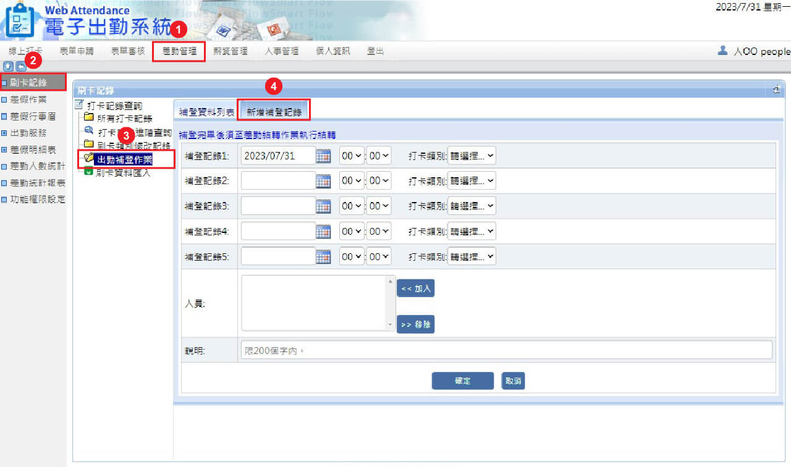

忘記打卡的救星！補登打卡這麼做
2023/08/17員工忘記打卡了嗎？
忘記打卡將造成出勤紀錄不完整，進而影響到薪資結算不準確等問題。如果員工忘記打卡、提供相關出勤證明，企業便不能扣發薪資。除了提醒員工準時打卡外，透過補登打卡功能也能避免勞資爭議。
如何補登打卡？
Class365 提供出勤補登作業功能，管理者可至後台為忘記打卡的員工新增打卡紀錄。在差勤管理中的「新增補登紀錄」分頁中可進行批次補登，一次最多能設定五筆紀錄，且支援批次加入對象，提高補登效率。新增完補登紀錄後可在「補登資料列表」中查詢已新增的資料。
1.差勤管理 > 2.刷卡紀錄 > 3. 出勤補登作業 > 4.新增補登紀錄